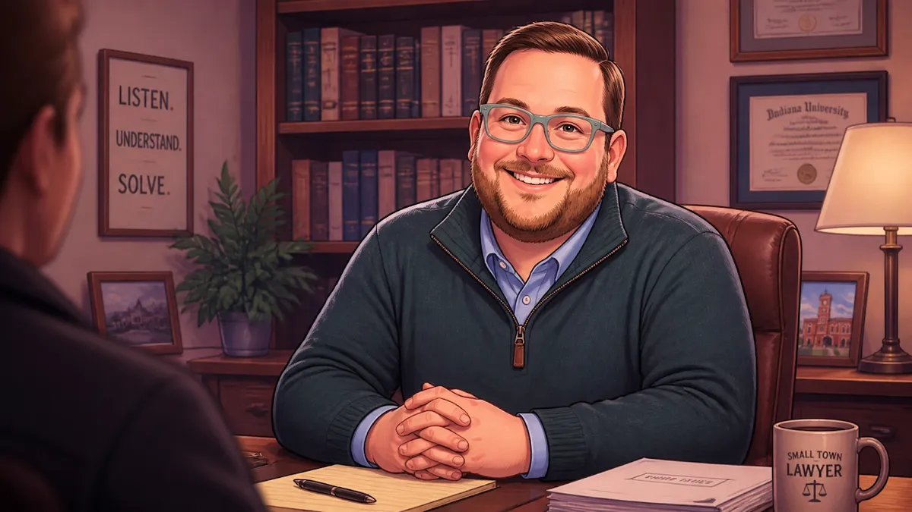
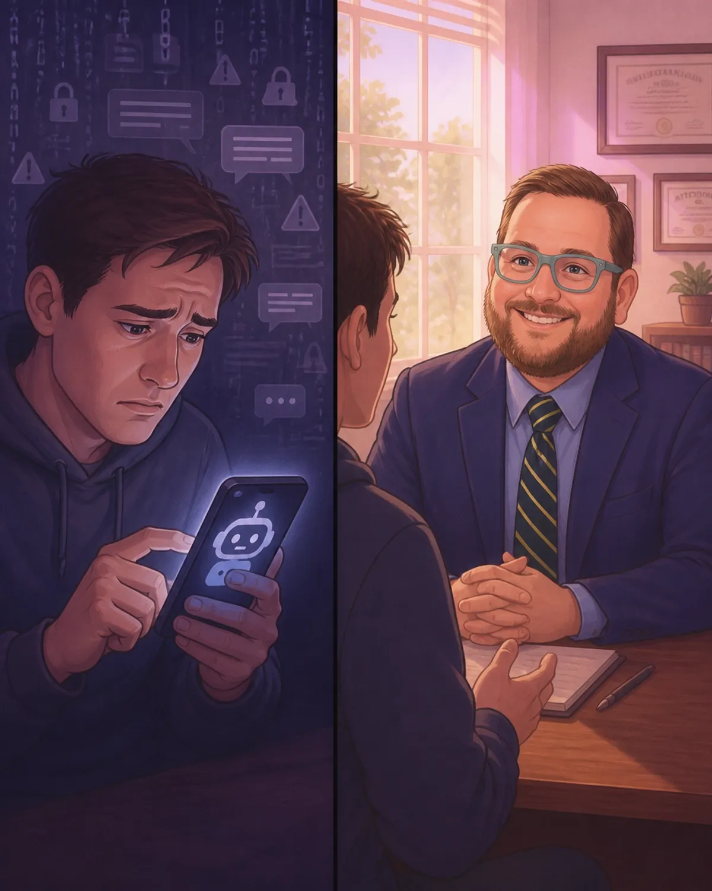
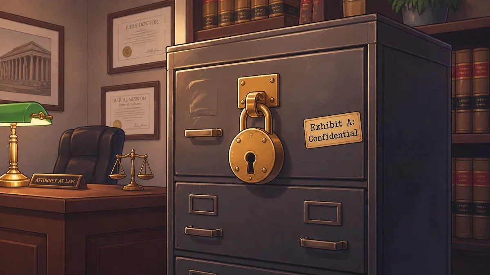

Why Your Chatbot Isn't Your Lawyer: Protecting Your Secrets in the Age of AI

Technology is changing fast. Today, you can ask a computer to write a poem, help with a recipe, or even answer questions about the law. Many people in North Vernon and all over Jennings County are using AI chatbots like ChatGPT to get quick answers.
It feels easy. It feels helpful. But there is a big danger that many people don't know about. If you tell a chatbot your secrets, those secrets might not stay private.
As your local Jennings County attorney, I want to make sure you stay safe. At Chris Doran Law LLC, I believe in being a "small town lawyer" who really listens to you. I wear many hats to help my neighbors in Vernon, Hayden, and Scipio. One of those hats is protecting your privacy.
This post will explain why a chatbot is not a lawyer and how you can protect your rights under Indiana law.
The Big Rule: Attorney-Client Privilege
In Indiana, we have a very important rule called "attorney-client privilege." This is a fancy way of saying that what you tell your lawyer stays between you and your lawyer.
The law says that courts, the police, and even people you are suing cannot force your lawyer to tell them what you said in private. This protection is a big deal. It lets you be 100% honest so your lawyer can give you the best options.
But here is the catch: This rule only works if you are talking to a real, licensed attorney.
Why Chatbots Can't Keep a Secret
When you type a question into a public AI chatbot, you are not talking to a person. You are talking to a computer program owned by a big company.
Here is why that is risky for your legal case:
It's not a lawyer. A chatbot doesn't have a license to practice law in Indiana. It doesn't have a duty to keep your secrets.
Big companies are watching. Most AI companies save what you type. They might use your words to train their computer or let their employees read them to improve the system.
The "Third Party" Rule. In Indiana, if you tell your secret to a third party (someone who isn't your lawyer), you usually "waive" or lose your privilege. This means the other side in a court case could ask the AI company for everything you typed.
No "Small Town" Loyalty. A computer doesn't care about your family or your future in Commiskey or Butlerville. It just processes data.
If you are looking for a lawyer in North Vernon Indiana, you want someone who stands by you. A chatbot simply can't do that.

How Chris Doran Law Uses AI Safely
I want to be clear: AI can be a great tool. I use technology at my firm to work faster and help my clients better. But I use it very carefully.
My firm's policy is simple:
AI is like a staff member. When I use AI, I treat it just like a clerk or an assistant in my office.
Strict Supervision. I watch everything the AI does. I make sure it follows the same strict privacy rules as any human working for me.
Protected Work. When I use AI to help me write a letter or research a case, that work is protected. It is "attorney work-product." This means the other side usually can't see it.
No Public Sharing. I never put your private, identifying information into a public chatbot that I don't control.
This is very different from you using a chatbot on your own. When I use it as your lawyer, your secrets are still protected by my license. When you use it by yourself, that protection isn't there.

What You Should Do If You Have Legal Questions
I know it is tempting to just "ask the computer" when you are worried about a divorce, a custody battle, or a criminal charge. But please follow these steps to stay safe:
Don't use names. If you must use a chatbot for general info, never type names, dates, or specific details about your case.
Don't share what we talked about. Never tell a chatbot, "My lawyer Chris Doran told me X, what do you think?" That could break the wall of silence that protects our talks.
Ask a real person first. If you live in Jennings County, just give me a call. I pride myself on being a lawyer who actually listens. We can sit down and talk about your options without a computer eavesdropping on us.
Understand the court. If you are new to the legal system, check out my Jennings County Court 101 guide to see how things work locally.
We Are Here for Our Neighbors
I primarily serve the people of Jennings County, including North Vernon, Scipio, and Hayden. I also travel to places like Columbus and Seymour. I want you to know that I am honest about costs: if I have to travel far, I will always tell you about travel fees upfront. There are no hidden surprises here.
As a small town lawyer, I handle many things. I can help with:
Criminal defense
Divorce and custody
Wills and estate planning
No matter what you are facing, you deserve a lawyer who treats your information like a sacred trust.
Let's Solve Your Legal Needs Together
In the age of AI, things can feel confusing. But the most important part of the law hasn't changed: the connection between a lawyer and a client.
You need someone who listens to what you have to say and gives you practical options. You need an expert who has handled a wide variety of complex legal matters but still feels like a neighbor.
If you have a legal problem, don't leave it to a chatbot. Your secrets and your future are too important.
Ready to talk? You can reach out to me anytime. Let's sit down, and I'll listen to your story.